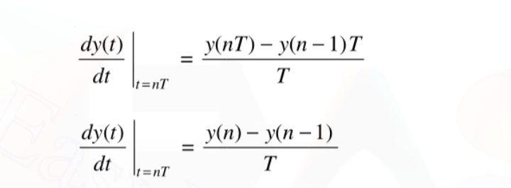
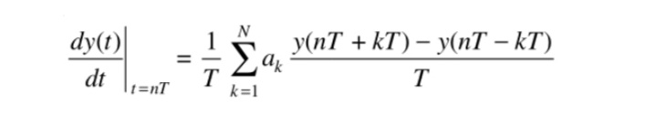
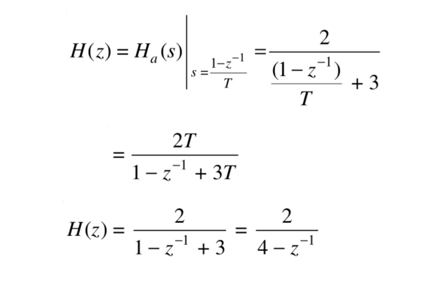

DESIGN OF IIR FILTER BY APPROXIMATION OF DERIVATIVES
The analog filter having the rational system function H(s) can also be described by the linear constant coefficient differential equations
In this method of IIR filter design by approximation of derivatives, an analog filter is converted into a digital filter by approximating the above differential equation into an equivalent difference equation
The backward difference formula is substituted for the derivative which is given by

Also, the second derivative can be replaced by backward difference equation
The ith derivative of function y(t) results in the equivalent frequency domain relationship as
Substituting s=jw in the expression for z, we get
It can be observed that the mapping of the equation s = (1 – z –1)/T, takes the left half plane of s-domain into the corresponding points inside the circle of radius 0.5 and centre at z = 0.5. Also the right half of the s-plane is mapped outside the unit circle. Because of this, this mapping results in a stable analog filter transformed into a stable digital filter. However, since the location of poles in the z-domain are confined to smaller frequencies, this design method can be used only for transforming analog low-pass filters and band pass filters which are having smaller resonant frequencies. This means that neither a high-pass filter nor a band-reject filter can be realized using this technique
The forward difference can be substituted for the derivative instead of the backward difference.
The mapping os s-plane into z plane by backward difference method is depicted in the figure shown below:
The limitations of the mapping methods discussed above can be overcome by using more complex substitution for the derivatives. An Nth order difference is proposed for the derivative, as shown

The mapping of s-plane into z-plane using forward difference method is shown below:
EXAMPLE
Convert the analog low pass filter represented by
into a digital filter making use of backward difference of derivation
Solution
We know that mapping formula for backward difference of derivative is given by,
For the given anlog transfer function the corresponding digital transfer function is given by,
